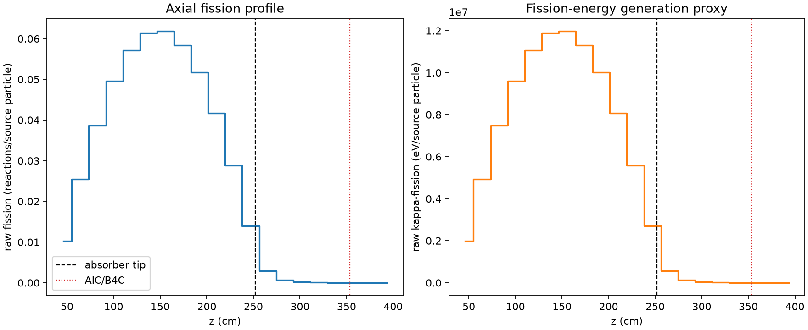
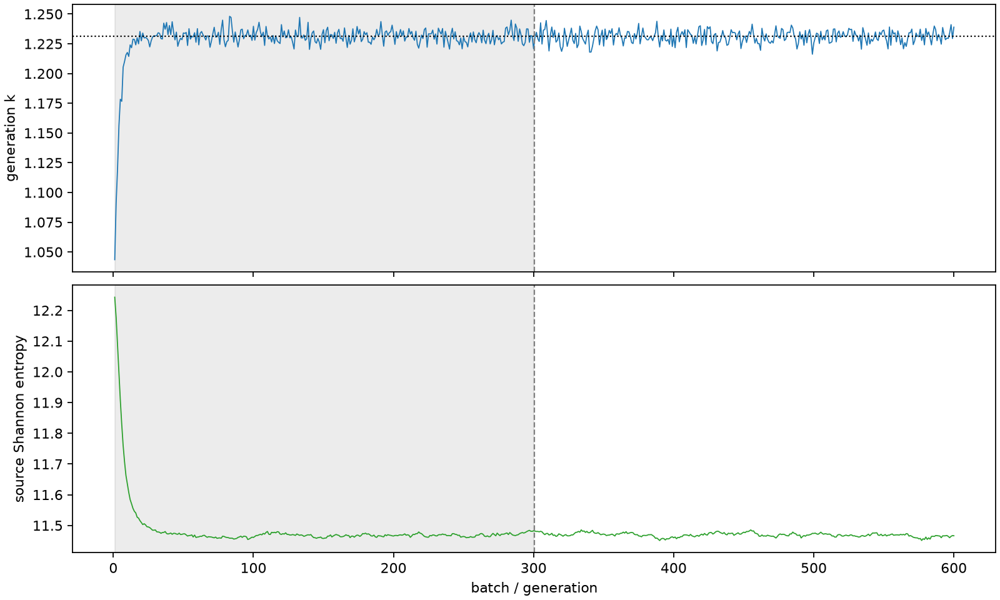

| field | value |
|---|---|
| experiment | V2-STAGE_256_OGRENCI_04-0031 |
| k | 1.231160692294853 |
| MC standard error | 0.00018535759214469434 |
| seconds | 964.8281911820086 |
| acceptance | not_assessed |
| convergence | review_required |
Completed is output integrity only; physical and statistical review required. Zero tallies do not prove zero production or zero uncertainty.
| diagnostic | value |
|---|---|
| geometric fuel voxels | 5280 |
| zero fission tally voxels | 272 |
| low signal fuel voxels | 1280 |
| low signal fission share | 0.00010452184519366047 |
| low signal kappa share | 0.00010455673695511769 |
| important fission share | 0.9500109061532056 |
| previous filter included | 4000 |
| duration estimate s | 1562.5173488400023 |
| actual minus estimate s | -597.6891576579937 |
| fission relative MC error | statistics |
|---|---|
| all_geometric_fuel | {"voxels": 5280, "positive_mean_voxels": 5008, "zero_mean_voxels": 272, "undefined_relative_error_voxels": 272, "median": 0.011253501733255233, "p95": 0.8935160464918386, "maximum": 1.0000000000000002} |
| low_signal | {"voxels": 1280, "positive_mean_voxels": 1008, "zero_mean_voxels": 272, "undefined_relative_error_voxels": 272, "median": 0.5519745367173672, "p95": 1.0, "maximum": 1.0000000000000002} |
| important_95pct | {"voxels": 2694, "positive_mean_voxels": 2694, "zero_mean_voxels": 0, "undefined_relative_error_voxels": 0, "median": 0.0080026067176826, "p95": 0.011590023622153544, "maximum": 0.016205135889492527} |
| outside_previous_filter | {"voxels": 1280, "positive_mean_voxels": 1008, "zero_mean_voxels": 272, "undefined_relative_error_voxels": 272, "median": 0.5519745367173672, "p95": 1.0, "maximum": 1.0000000000000002} |
| kappa_fission relative MC error | statistics |
|---|---|
| all_geometric_fuel | {"voxels": 5280, "positive_mean_voxels": 5008, "zero_mean_voxels": 272, "undefined_relative_error_voxels": 272, "median": 0.011240694362835077, "p95": 0.893582226420936, "maximum": 1.0000000000000002} |
| low_signal | {"voxels": 1280, "positive_mean_voxels": 1008, "zero_mean_voxels": 272, "undefined_relative_error_voxels": 272, "median": 0.5506850080307631, "p95": 1.0, "maximum": 1.0000000000000002} |
| important_95pct | {"voxels": 2694, "positive_mean_voxels": 2694, "zero_mean_voxels": 0, "undefined_relative_error_voxels": 0, "median": 0.007993360211724069, "p95": 0.01157599304388145, "maximum": 0.01618785199810507} |
| outside_previous_filter | {"voxels": 1280, "positive_mean_voxels": 1008, "zero_mean_voxels": 272, "undefined_relative_error_voxels": 272, "median": 0.5506850080307631, "p95": 1.0, "maximum": 1.0000000000000002} |
| axial bin | fission share | kappa-fission share |
|---|---|---|
| 1 | 0.02027655427224895 | 0.020277379302292484 |
| 2 | 0.05059453724555224 | 0.050594286631377876 |
| 3 | 0.07687135644165406 | 0.07687102276204742 |
| 4 | 0.09851903298063369 | 0.09851856502578726 |
| 5 | 0.1136699489493429 | 0.113669392425243 |
| 6 | 0.1221748462672624 | 0.12217437514176815 |
| 7 | 0.12295730647958636 | 0.12295673505883754 |
| 8 | 0.1162029174283896 | 0.11620258772641413 |
| 9 | 0.10291591180809181 | 0.10291536398923293 |
| 10 | 0.08282084615715436 | 0.0828204209755121 |
| 11 | 0.05744058446808071 | 0.05744017278648997 |
| 12 | 0.02777858734618875 | 0.02777961315514 |
| 13 | 0.005882462332276332 | 0.005884326475432279 |
| 14 | 0.001431667827048168 | 0.001432144385857534 |
| 15 | 0.00034461732750869505 | 0.0003447507125541758 |
| 16 | 9.149026966384382e-05 | 9.151866209775619e-05 |
| 17 | 2.1299761780670344e-05 | 2.131163380930465e-05 |
| 18 | 5.083887537290929e-06 | 5.083620461165929e-06 |
| 19 | 8.098002749033281e-07 | 8.10085898833771e-07 |
| 20 | 1.3894972414887466e-07 | 1.3944374629833966e-07 |
Histories include the inactive-to-active transition at batch 300. kappa-fission approximates fission energy production, not total heat deposition.

